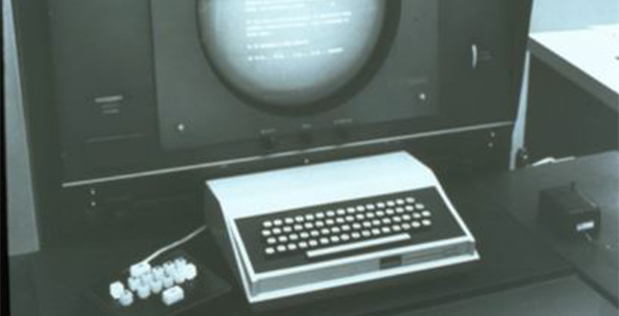
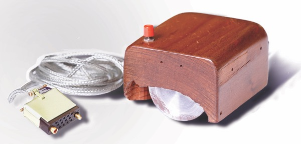

Douglas Engelbart's Inventions
The oN-Line system A.K.A (NLS)
Douglas thought of the idea for a collabaritive document where people from all over the area can connect to the same document and share and update information together. The NLS system is the begining of the internet. The NLS was the first system to use hypertext links, raster-scan video moniters, information organized by relevence, screen windowing, presentation programs and the computer mouse. When he demonstrates the NLS it was in what we call now the "mother of all demos"

The computer Mouse
as a project to make computer's easier to use Douglas Engelbart started a project founded by ARPA, to help the users of computers to interact with the computers in easier ways. the first computer mouse has carved out of wood and had just one button

home page